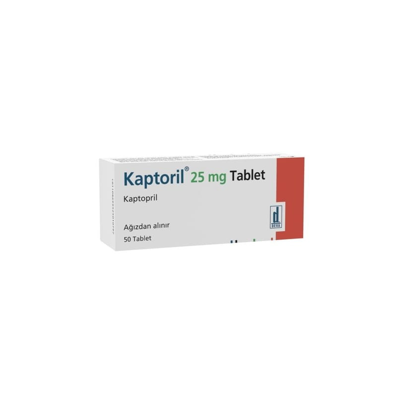

Kaptoril 25 mg Tablet, 30 Tablet

Ne için kullanılır
KT · Bölüm 1KAPTOR İL, 10 tablet içeren blister ambalajlarda bulunur. Her bir karton kutu 50 tablet içermektedir. KAPTOR İL, kaptopril etkin maddesini içermektedir. KAPTOR İL, “ADE inhibitörleri” adı verilen (Anjiyotensin Dönüştürücü Enzim İnhibitörleri) bir ilaç grubuna dahildir.
KAPTORİL kan damarlarını genişleterek etki gösterir.
Bu etki kan basıncınızı düşürmeye yardımcı olur. Ayrıca kalbin vücudunuza kan pompalamasını kolaylaştırır. KAPTORİL; • Yüksek kan basıncı (hipertansiyon) • Kalp yetmezliği- kalbin vücuda kan pompalamada güçlük çektiği durum • Kalp krizi (miyokard enfarktüsü)- kalbin vücuda kan pompalamada güçlük çekti ği durumlarda kullanılır.